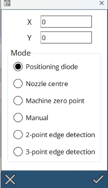

Munka eltolások
A gép többféleképpen is meghatározhatta a munkaeltolást.

Pozícináló dióda
A leggyakoribb módszer, hogy a zöld lézermutatót a kívánt pozícióba léptetjük, majd megnyomjuk a Beállítás gombot. A gép ezt fogja használni munka-eltolásként.
Fúvóka közepe
Ez az opció különösen akkor lehet hasznos, ha a gép a fúvókát már a nullpontra állította. A gép a fúvóka közepét használja munkaeltolásként.
Manuális
Speciális műveleteknél vagy ha készülékekkel dolgozik, ez az opció lehetőséget biztosít a munkaeltolás manuális beállítására.
2 pontos élfelismerés
Ez az opció akkor hasznos, ha a munkaeltolást az anyag szélén kell beállítani. A gép megkéri, hogy léptesse a fúvókát az első ponthoz és automatikusan meghatározza a lemez sarkát. Ez a funkció gyors és a lemez egyik sarkára helyezendő apró alkatrészekre van optimalizálva.
| A 2 pontos stratégia pontosságát a gép pontossága korlátozza, ezért nem használható a teljes vágandó lemezen. |
A logika a következőképpen működik:

-
A lézerrel válasszon ki egy, a kívánt nulla álláshoz közeli pozíciót.
-
A gép sarokkeresést végez X irányban attól a pozíciótól, ahonnan Ön elindította.
-
A gép a két feltámasztóléc közötti legközelebbi középpontban végez sarokkeresést. Ez maximalizálja a pontos sarokmérést.
-
A gép a megtalált sarokba megy, majd a megerősítés után levágja az alkatrészt.
3 pontos élfelismerés
A 3 pontos módszer sokkal pontosabb és 3 mérési pontot vesz igénybe egy teljes lemeztáblán. Feltételezi, hogy egy teljes lemeztábla (>1000x2000) van az asztalon és három sarokkeresést végez az x300, x1500 és y300 pontokon, hogy megtalálja a nullpontot. Ez az előnyben részesített módszer egy teljes lemez levágására.

| Ha az élfelismerés egy feltámasztóléc tetején történik, akkor pontatlan eredményeket kapunk. Ezért a gép automatikusan kiválaszt egy pozíciót két feltámasztóléc között. |
| A hárompontos élfelismerés lézergépen történő alkalmazása előtt a Flux szoftverben meg kell adni a lemezméretet. Győződjön meg arról, hogy a programban megadott lemezméret megegyezik a gépbe töltött tényleges lemez méretével. Győződjön meg arról, hogy a vezérlődióda a lemez sarkában van elhelyezve. |
Ha kiválasztjuk a 3 pontos élfelismerést a Munkaeltolás menüben, akkor a következő művelet kerül végrehajtásra:
-
Először mozgassa a vágófejet a lemez szélén a (0,0) pozícióban lévő vezérlődiódához.
-
A vágófej elmozdul ebbe a pozícióba, hogy megtalálja a lemez első élét.
-
Az első él felismerése után a vágófej a második pozícióba mozdul, hogy megtalálja a lemez második élét.
-
A második él felismerése után a vágófej megkeresi a lemez harmadik élét (a lemez meredekségének megállapításához).
-
A megerősítés után a fej automatikusan a kezdőpozícióba mozdul, és végrehajtja a vágási folyamatot.